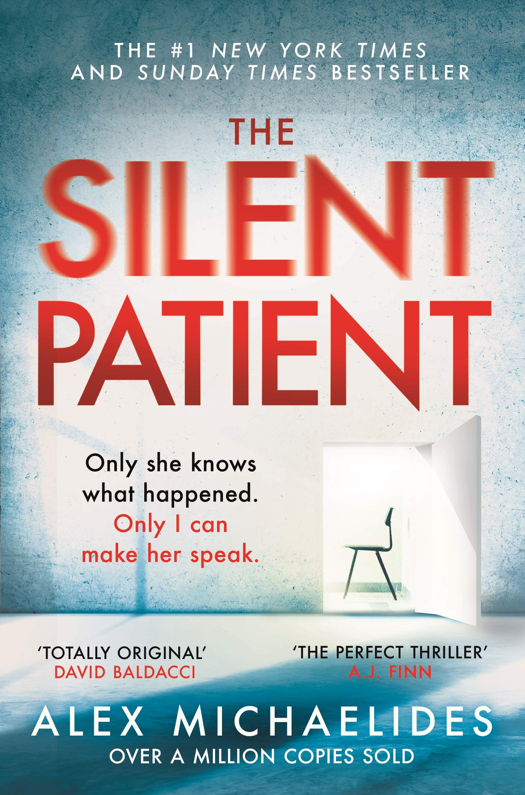

The Silent Patient
The Silent Patient is a shocking psychological thriller of a woman’s act of violence against her husband—and of the therapist obsessed with uncovering her motive.
Alicia Berenson’s life is seemingly perfect. A famous painter married to an in-demand fashion photographer, she lives in a grand house with big windows overlooking a park in one of London’s most desirable areas. One evening her husband Gabriel returns home late from a fashion shoot, and Alicia shoots him five times in the face, and then never speaks another word.
10.06.2021
Read 95x
5 Comments